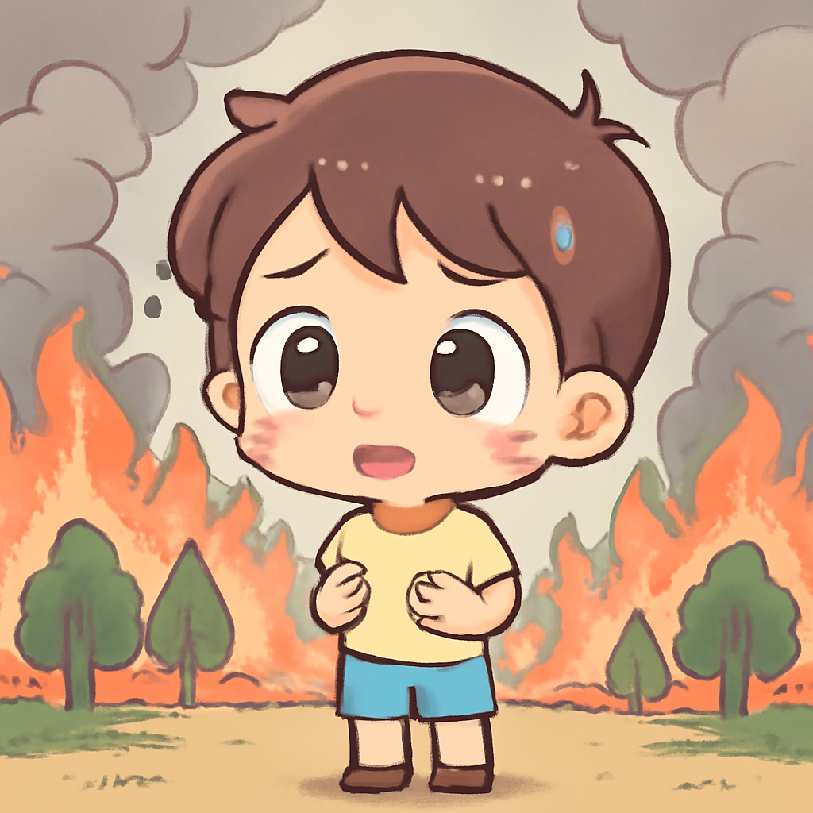
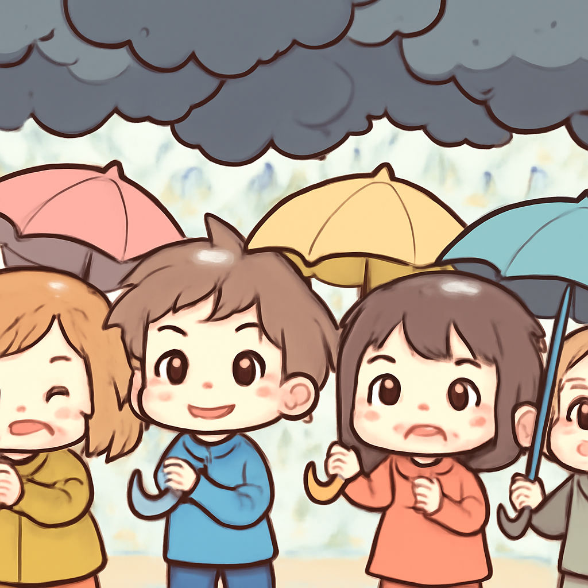
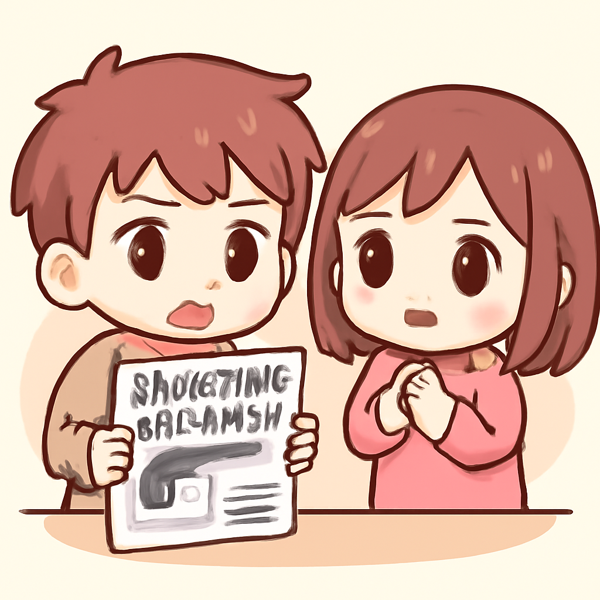
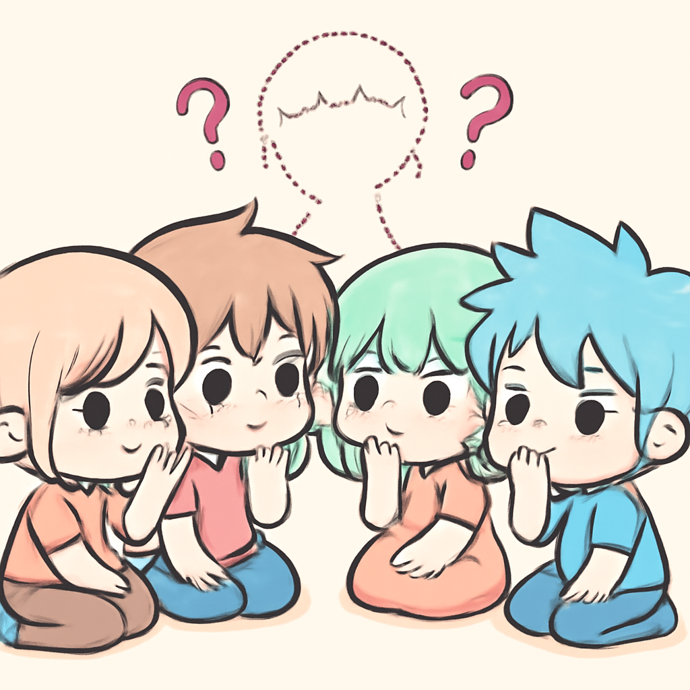

其一 · 西班牙安達盧西亞 · 野火造成12人死亡
西班牙安達盧西亞發生致命野火，已知12人喪命，23人失蹤。

在西班牙安達盧西亞的洛斯加亞多斯，最近爆發的野火造成至少12人死亡，並且有23人失踪，這場火災已成為該國歷史上最致命的之一。許多受害者是外國遊客，這讓當地旅遊業感到擔憂。這一事件突顯了氣候變化對自然災害頻發的影響，讓人不禁擔心夏天的燒烤聚會該如何安全進行。
🔗 原始新聞 ↗
2026-07-11 · 以古觀今，以笑抗愁
西班牙安達盧西亞發生致命野火，已知12人喪命，23人失蹤。

在西班牙安達盧西亞的洛斯加亞多斯，最近爆發的野火造成至少12人死亡，並且有23人失踪，這場火災已成為該國歷史上最致命的之一。許多受害者是外國遊客，這讓當地旅遊業感到擔憂。這一事件突顯了氣候變化對自然災害頻發的影響，讓人不禁擔心夏天的燒烤聚會該如何安全進行。
🔗 原始新聞 ↗
菲律賓面臨強颱風Bavi，已造成15人遇難。

颱風Bavi正朝向台灣及中國東南沿海推進，氣象預測這將是數十年來最強的風暴之一。菲律賓的土地滑坡事件已造成15人喪生，隨著風暴的逼近，當地居民面臨更大的威脅。這次的颱風提醒我們，無論多麼美麗的海灘，背後總有大自然的威脅在潛伏。
🔗 原始新聞 ↗
德州ICE執法時誤殺無辜，激起社會關注。

在美國德州休士頓，一名男子在ICE執法時被射殺，卻是因為執法者尋找的對象並非他。這起事件引起了社會的廣泛關注和譴責，許多人質疑執法機構的行為是否合理。這讓人不禁想，為什麼我們的社會總是要用暴力來解決問題，而不是選擇對話？
🔗 原始新聞 ↗
伊朗最高領導人缺席，引發權力真空與不安。

伊朗最高領導人哈梅內伊最近在其父親的葬禮上缺席，這一情況引發了國內對他健康狀況的猜測，也造成了政權中的權力真空。隨著國家內部的分歧加大，這可能會對伊朗的政治穩定帶來深遠影響。這讓人想起了，當權力的遊戲開始時，坐在邊緣的觀眾也許才是最不安的。
🔗 原始新聞 ↗
蘋果對OpenAI提起訴訟，指控其盜竊商業機密。
蘋果公司最近起訴OpenAI，指控其在建立硬體業務時盜竊商業機密。這場官司不僅涉及科技界的競爭，還可能影響未來的人工智慧發展。這讓人不禁想，科技巨頭們是不是該先喝杯咖啡，坐下來好好談談，而不是靠法庭來解決問題？
🔗 原始新聞 ↗